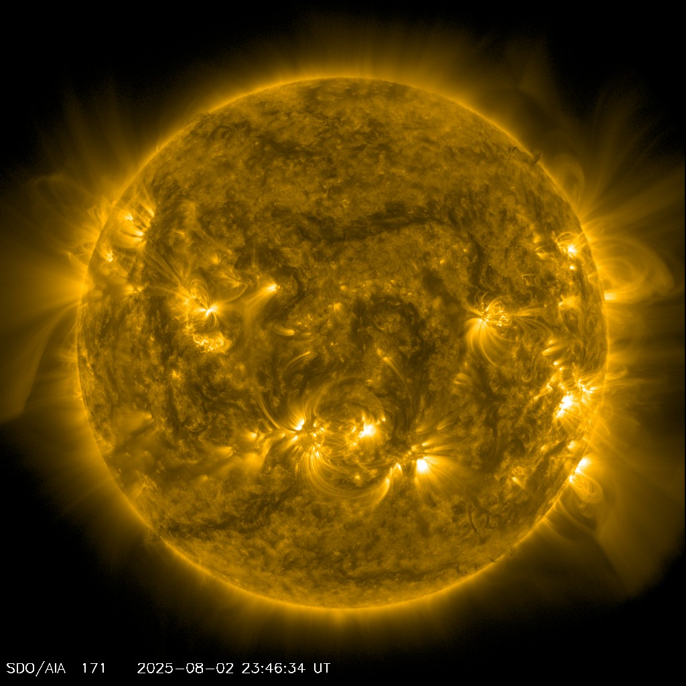

Our Star
The Sun is a G-type main-sequence star (G2V) that dominates our solar system, providing light, heat, and energy to all the planets orbiting around it.
Basic Facts
- Type: Yellow Dwarf Star (G2V)
- Age: 4.6 billion years
- Diameter: 1,392,700 km (109 × Earth)
- Mass: 1.989 × 10³⁰ kg (333,000 × Earth)
- Surface Temperature: 5,778 K (5,505°C)
- Core Temperature: 15.7 million K
Composition
- Hydrogen: 73.46%
- Helium: 24.85%
- Oxygen: 0.77%
- Carbon: 0.29%
- Iron: 0.16%
- Other elements: 0.47%
Solar Activity
- Sunspots: Dark regions with intense magnetic activity
- Solar Flares: Sudden bursts of energy and radiation
- Coronal Mass Ejections: Massive eruptions of plasma
- Solar Wind: Stream of charged particles
- Solar Cycle: 11-year period of activity variation
Layers of the Sun
- Core: Nuclear fusion occurs here
- Radiative Zone: Energy transfers by radiation
- Convective Zone: Energy transfers by convection
- Photosphere: Visible surface of the Sun
- Chromosphere: Thin layer above photosphere
- Corona: Outer atmosphere, visible during eclipses
Importance to Earth
- Light Source: Provides daylight and visibility
- Heat Source: Maintains Earth's temperature
- Energy Source: Powers photosynthesis and life
- Weather Driver: Creates atmospheric circulation
- Solar Power: Renewable energy source
- Navigation: Used for timekeeping and direction
Space Weather
- Auroras: Northern and Southern Lights
- Satellite Disruption: Can affect communications
- Power Grids: May cause electrical disturbances
- Astronaut Safety: Radiation exposure concern
- GPS Accuracy: Can affect navigation systems
Fun Facts
⚡ Energy Output
The Sun produces enough energy in one second to power Earth for 500,000 years.
🌍 Distance
Light from the Sun takes about 8 minutes and 20 seconds to reach Earth.
🔥 Temperature
The Sun's core is so hot that hydrogen atoms fuse together to form helium.
⚖️ Gravity
The Sun's gravity is so strong that it holds all the planets in orbit around it.